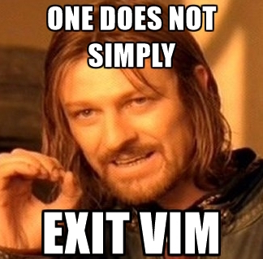

Overview
复习
- 状态机模型 (程序、多线程程序、操作系统)
- 操作系统是状态机的管理者
本次课回答的问题
- Q: 我们是操作系统的用户；但操作系统提供的 API 并不是 “我们” 作为人类用户能直接使用的。那 “我们” 到底怎么用操作系统？
本次课主要内容
- UNIX Shell 的设计和实现
Shell
半学期小结：我们都学了什么？
整个计算机系统世界的 “构建”
- 硬件 (NEMU)：从 CPU Reset 开始执行指令 (计算和 I/O)
- Firmware: 加载操作系统
- 操作系统：状态机的管理者
- 初始化第一个进程 (状态机)
- 执行系统调用
- 整个系统里只需要 “一个程序”
- busybox/toybox/...
- 这个程序可以再执行各种应用程序
- vim; dosbox; xeyes; ...
为用户封装操作系统 API
我们需要一个 “用户能直接操作” 的程序管理操作系统对象。
这就是 Shell (内核 Kernel 提供系统调用；Shell 提供用户接口)
- “与
人类直接交互 的第一个程序” - 帮助人类创建/管理进程 (应用程序)、数据文件……

The UNIX Shell


“终端” 时代的伟大设计
- “Command-line interface” (CLI) 的巅峰
- man sh (推荐阅读！), bash, ...
- 原来我们一直在编程
- 直到有了 Graphical Shell (GUI)
- Windows, Gnome, Symbian, Android
复刻经典
脾气有点小古怪的 UNIX 世界
“Unix is user-friendly; it's just choosy about who its friends are.”
- 但如果把 shell 理解成编程语言，“不好用” 好像也没什么毛病了
你见过哪个编程语言 “好用” 的？

A Zero-dependency UNIX Shell (from xv6)
- 零库函数依赖 (-ffreestanding 编译、ld 链接)
- 可以作为最小 Linux 的 init 程序
- 用到
文件描述符 ：一个打开文件的 “指针”
支持的功能
- 命令执行
ls - 重定向
ls > a.txt - 管道
ls | wc -l - 后台
ls & - 命令组合
(echo a ; echo b) | wc -l

The Shell Programming Language
- 重定向:
cmd > file < file 2> /dev/null - 顺序结构:
cmd1; cmd2,cmd1 && cmd2,cmd1 || cmd2 - 管道:
cmd1 | cmd2 - 预处理:
$(),<() - 变量/环境变量、控制流……
Job control
- 类比窗口管理器里的 “叉”、“最小化”
- jobs, fg, bg, wait
- (今天的 GUI 并没有比 CLI 多做太多事)
UNIX Shell: Traps and Pitfalls

在 “自然语言”、“机器语言” 和 “1970s 的算力” 之间达到优雅的平衡
- 平衡意味着并不总是完美
- 操作的 “优先级”？
ls > a.txt | cat(bash/zsh)
- 文本数据 “责任自负”
- 有空格？后果自负！(PowerShell: 我有 object stream pipe 啊喂)
- 行为并不总是 intuitive
$ echo hello > /etc/a.txt
bash: /etc/a.txt: Permission denied
$ sudo echo hello > /etc/a.txt
bash: /etc/a.txt: Permission denied
展望未来
Open question: 我们能否从根本上改变命令行的交互模式？
Shell 连接了用户和操作系统
- 是 “自然语言”、“机器语言” 之间的边缘地带！
- 非常适合 BERT 这样的语言模型
已经看到的一些方向
- fish, zsh, ...
- Stackoverflow, tldr, thef**k (自动修复)
- Command palette of vscode (Ctrl-Shift-P)
- Executable formal semantics for the POSIX shell (POPL'20)
终端和 Job Control
Shell 还有一些未解之谜

为什么 Ctrl-C 可以退出程序？
为什么有些程序又不能退出？
- 没有人 read 这个按键，为什么进程能退出？
- Ctrl-C 到底是杀掉一个，还是杀掉全部？
- 如果我 fork 了一份计算任务呢？
- 如果我 fork-execve 了一个 shell 呢？
- Hmmm……
为什么 fork-printf.c 会在管道时有不同表现？
- libc 到底是根据什么调整了缓冲区的行为？
为什么 Tmux 可以管理多个窗口？
答案：终端
终端是 UNIX 操作系统中一类非常特别的设备！
- RTFM: tty, stty, ...

观察 Tmux 的实现

首先，我们可以 “使用” tmux
- 在多个窗口中执行 tty，会看到它们是不同的终端设备！
然后，我们也可以把 tmux “打开”
- strace (
-o) 可以看到一些关键的系统调用 (以及 man 7 pty)
终端相关的 API
为什么 fork-printf 能识别 tty 和管道？
- 当然是观察 strace 了！
- 找到是哪个系统调用 “识别” 出了终端？
#include 
SIGSEGV 和 SIGFPE
大家熟悉的 Segmentation Fault/Floating point exception (core dumped)
- #GP, #PF 或 #DIV
- UNIX 系统会给进程发送一个信号
- 此时可以生成一个 “core” 文件 (ELF 格式)，能用 gdb 调试
UNIX (System V) 信号其实是有一些 dark corners 的
- 如果
SIGSEGV里再次SIGSEGV?- POSIX.1 solved the portability mess by specifying
sigaction(2), which provides explicit control of the semantics when a signal handler is invoked; use that interface instead ofsignal().- 支持多线程 (早期的 UNIX 还没有多线程)、信号屏蔽、……
- POSIX.1 solved the portability mess by specifying
Job Control 背后的机制
RTFM: setpgid/getpgid(2)，它解释了 process group, session, controlling terminal 之间的关系
——你神奇地发现，读手册不再是障碍了！
- The PGID (process-group ID) is preserved across an execve(2) and inherited in fork(2)...
- Each process group is a member of a session

Job Control: RTFM (cont'd)
- A session can have a controlling terminal.
- At any time, one (and only one) of the process groups in the session can be the foreground process group for the terminal; the remaining process groups are in the background.
./a.out &创建新的进程组 (使用 setpgid)
- If a signal is generated from the terminal (e.g., typing the interrupt key to generate
SIGINT), that signal is sent to the foreground process group.- Ctrl-C 是终端 (设备) 发的信号，发给 foreground 进程组
- 所有 fork 出的进程 (默认同一个 PGID) 都会收到信号
- 可以修改 signal-handler.c 观察到这个行为
- At any time, one (and only one) of the process groups in the session can be the foreground process group for the terminal; the remaining process groups are in the background.
Job Control: RTFM (cont'd)
- Only the foreground process group may read(2) from the terminal; if a background process group tries to read(2) from the terminal, then the group is sent a
SIGTTINsignal, which suspends it.- 这解释了
cat &时你看到的 “suspended (tty input)” - 同一个进程组的进程 read tty 会竞争
- signal-handler.c 同样可以观察到这个行为
- 这解释了
- The
setpgid()andgetpgrp()calls are used by programs such as bash(1) to create process groups in order to implement shell job control.- 如果希望从进程组里 detach, 使用 setpgid
ps -eo pid,pgid,cmd可以查看进程的 pgid
总结
总结
本次课回答的问题
- Q: 我们作为用户，到底怎么 “使用” 操作系统？
Take-away messages
- 一个功能完整的 Shell 使用的操作系统对象和 API
- session, process group, controlling terminal
- 文件描述符：open, close, pipe, dup, read, write
- 状态机管理：fork, execve, exit, wait, signal, kill, setpgid, getpgid, ...
- 随着 “零依赖” 的 sh-xv6.c，操作系统的神秘感逐渐消失
- (下次课拆开库函数)